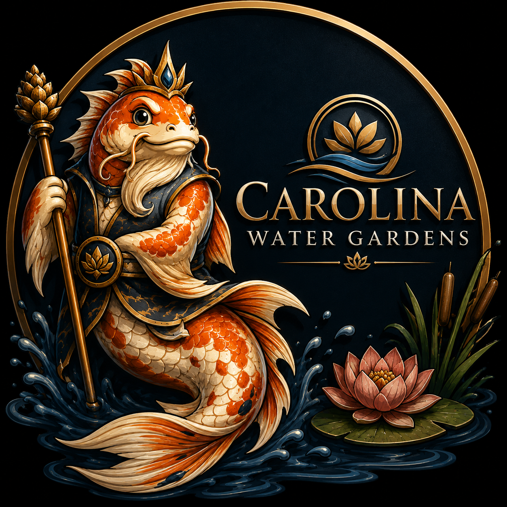
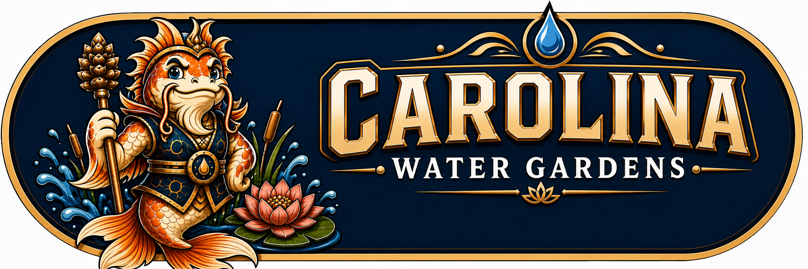
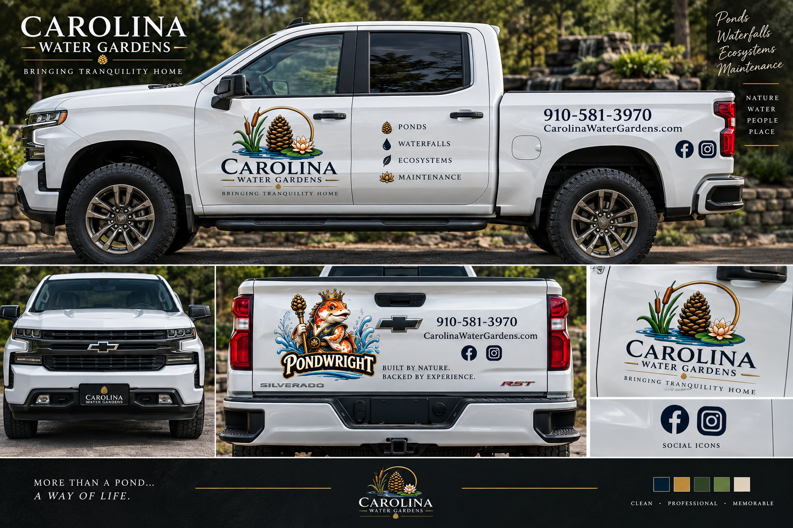

01
Custom
Every pond one of a kind — set to your grade, your stone, your view.

Pinehurst · The NC Sandhills
Ecosystem ponds, pondless waterfalls, and fountainscapes — owner-built and engineered to stay clear. Designed into your yard like it was always there.
Every pond one of a kind — set to your grade, your stone, your view.
Low-maintenance by design. Circulation, filtration, plants, fish.
Design, build, and ongoing care — one crew, start to clear.
Local, family-run. Never subcontracted.

The Dragon Gate
“Swim far enough up the river, leap the falls at the Dragon Gate, and the fish becomes a dragon.”
It's why koi are almost always painted climbing water — never still. And it's why we've never built a pond without giving the water somewhere to fall from. The falls aren't decoration on top of the pond. They're the reason the whole thing works: moving water, aerated water, water with somewhere to go.
Every build has a climb in it. A two-foot cascade off a patio. Sixteen feet of stream through a side yard. A sheer drop you can hear from the back door.
The old fish who builds them, we call the Pondwright.
— Jon, the Pondwright
On the road
Door lockup, tailgate Pondwright, phone and site on the bed. Same marks as the site — navy, gold, and the king who builds them.

The Work
Real builds across the Sandhills — koi ponds, waterfalls, and full backyard ecosystems.


What We Build
Koi and garden ecosystem ponds — liner, filtration, rock, and planting. Built to stay clear.
Open water or pondless — moving water you can hear from the house.
Statement fountains and bubblers for courtyards, entries, and gardens.
Seasonal care, cleanouts, leak fixes — and help when the pond won't clear.
Our Process
The pond is a living system — circulation, filtration, rock, gravel, plants, and fish in balance — so it stays clear with almost no chemicals.
We outline the pond and stream until the shape sits right in the yard.
Skimmer and biological filter at opposite ends so water travels the full length.
Stepped shelves and clean walls — the bones of the ecosystem.
Geotextile first, then flexible rubber liner. The watertight shell.
Pump in the skimmer, buried lines — you never see a pipe.
Boulders and river gravel set by hand over the liner.
Feature rocks and foam tell the water exactly where to go.
Liner folded above the water line, backfilled with soil and gravel.
Marginal plants, fill, beneficial bacteria. Then it starts to live.
Where We Build
Questions & Answers
Free, No-Pressure Estimate
Tell us about your yard and we'll design the water feature that fits it. We'll follow up personally — usually within a day.